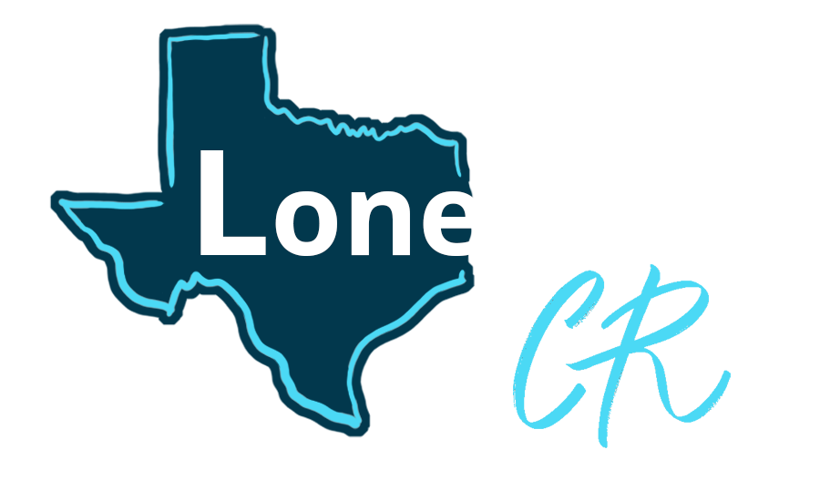

SWITCH TO
ClassCade
HS
Henry Scott
Dallas Mavs Elementary
⏻
Prototype controls
GRADE
2–3
4–5
6–8
9–12
PROMPT
Argumentative
Informational
Narrative
Correspondence
TASK
ECR
ECR + Q
Assignment
Save And Exit
View Passage
View Checklist
Passage
Dictionary
Line Reader
Your response
Prompt
See full directions
Back
Next step
Extended Writing Feedback
✕
Got it
Almost
Not yet
Sample result:
0/5
3/5
5/5
Done